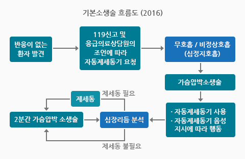
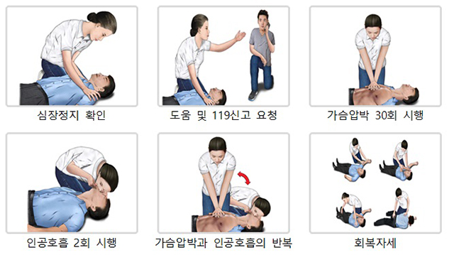
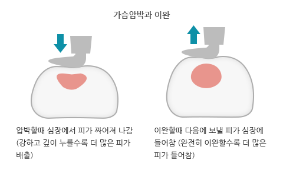

심폐소생술 및 자동심장충격기 (AED)

심폐 소생술(CPR)이란?
심폐소생술(CPR) 방법
1. 심정지 및 무호흡 확인>
2. 도움 및 119신고 요청
3. 가슴압박 30회 시행
4. 인공호흡 2회 시행
5. 가슴압박, 인공호흡 반복

자동심장충격기(AED) 란?
자동심장충격기(AED) 사용법
성인 심폐소생술

성인 심폐소생술
1. 의식 확인
2. 도움 및 119신고 요청
3. 흉부압박점 찾기

4. 가슴(흉부)압박하기
5. 인공호흡 2회 시행
6. 가슴(흉부)압박과 인공호흡의 반복
소아심폐소생술 응급처치

소아심폐소생술 응급처치